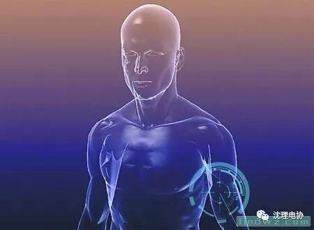
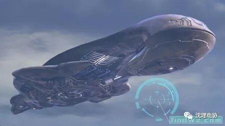
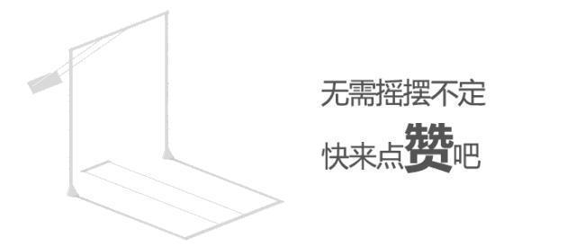

未来科技的神奇！！！

一些科学家对2100年前的未来科技进行了预测，如果这些预测能够变成现实的话，将会让世界发生翻天覆地的变化。我们一起来看下这些科学家的十大未来科技预测！

1人体器官商店
出现时间：2030年前 预测者：维克森林大学安东尼·阿塔拉博士

若不幸遭遇车祸或疾病，人们可以从“人体器官商店”订购用自身细胞培育的备用器官。科学家现在已经可以培育软骨、鼻子、耳朵、骨骼、皮肤、血管和心脏瓣膜。4年前，他们培育了第一个膀胱，去年又培育了第一根气管。在未来大约5年内，科学家将能够培育出肝脏。阿塔拉博士认为：“我们可以预见的是这项未来科技今后将能够提供现成的器官，人们只需取出受损的器官，然后按照需要植入培育的新器官。”
2读心术
出现时间：2030年前 预测者：加州大学伯克利分校的肯德里克·凯伊
目前的技术可以实现往中风瘫痪的患者大脑中植入芯片，并将这个芯片同笔记本电脑连接。这些患者将会利用意念编辑电子邮件、玩视频游戏和上网。凯伊正在编订一本“意念词典”，他已经研发出了一个可以破解脑电波信号的电脑程序。他说：“未来科技从一大堆影像中识别出患者看到的特定影像将成为可能，而且仅仅通过检测其大脑的活动，就能够将这一影像还原。”日本的本田公司也曾制造过一个机器人，戴着头盔的员工通过意念就能控制机器人的活动。
3建造星际飞船
出现时间：2100年 预测者：康奈尔大学梅森·佩克博士

恒星离我们太远了，就连最近的恒星也需要我们的火箭花费7万多年才能到达。但是佩克相信，未来科技的第一艘星际飞船会是一个微型的电脑芯片，只有指甲盖大小。即使只有少量的芯片到达了恒星，这就足以发回有价值的信息。佩克博士的设想是，向木星周围发射数百万的芯片，这样木星周围强大的磁场将能够将它们加速到“每秒上万公里”，而且他认为这一速度还可以无限增加直至接近光速。
4灭绝动物复活
出现时间：2070年前 预测者：美国先进细胞技术公司罗伯特·兰扎博士
未来我们将能够拥有饲养灭绝动物的动物园。兰扎能够从已死亡25年的动物尸体上提取可用的DNA，将这些DNA植入到母牛卵细胞内，9个月后，一只克隆动物就诞生了。这样这个物种就算是复活了。即使尼安德特人已经消亡了数万年，但是他们的DNA已经被破译了，所以有科学家正在讨论要不要让他们复活。兰扎认为：“如果我们有了控制基因的工具，那么从理论上来讲利用基因复活物种就将成为可能。问题是，我们应该这么做吗？
编 辑：王同远
图文摘自：探索领域
想了解更多资讯可以关注我们！！！

